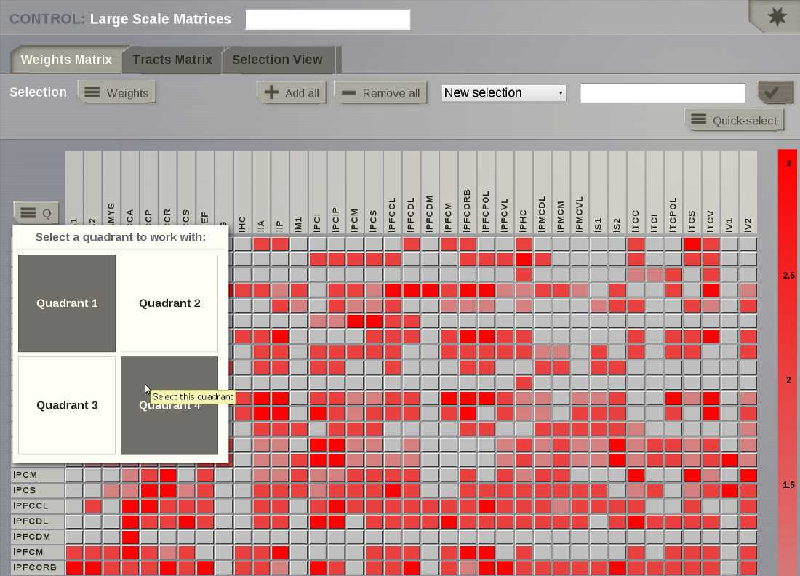

Main Interface Description and Typical Workflow
On the right, the login button has changed to a logout button with obvious
functionality.
The main menu of TheVirtualBrain interface lays at the bottom of the page and is composed
of six basic options:
- User:
- where user's details are managed.
- Project:
- where projects are defined and administered.
- Simulator:
- where simulations are launched, combined with the analyzers and visualizers.
It allows to have quick overview of the ongoing Project, which explains why
we consider the Simulator to be the core of TheVirtualBrain.
- Stimulus:
- where spatiotemporal stimuli can be generated.
- Analyze:
- where experimental and simulated data can be analyzed.
- Connectivity:
- where connectivity visualization and editing facilities of TheVirtualBrain are stored.
These options sum up the typical workflow within TheVirtualBrain framework which proceeds
through these steps:
- a project is defined and/or selected and user data, (e. g. a connectivity matrix), are uploaded into this project;
- new data is obtained by simulating large scale brain dynamics with some set of parameters;
- results are analyzed and visualized;
A history of launched simulations is kept to have the traceability of any
modifications that took place in the simulation chain.
User
TVB Settings
Once started, TheVirtualBrain should automatically open your default browser and start on
the default http://127.0.0.1:8080/settings/settings. If not, you should
manually open your favorite browser from our list of supported browsers and
open the before mentioned URL. This should open up the following settings page:
These are the configurable settings for TheVirtualBrain. Note that the Name of the administrator
is the only one that cannot be changed later on. The others will be accessible afterward
from the profile page of the administrator. These settings are:
- Administrator User Name:
- the name of the administrator. Default value here is admin.
Remember it, as you will need this account for validating other accounts created with Register function.
- Password:
- the password of the administrator. Default value here is pass.
Remember it, as you will need it at a first login.
This password can be changed later by clicking the Change password link, from the profile page
(available only after a login).
- Administrator Email:
- the email of the administrator. Emails requesting validations for new users will
be sent to this address. This can be changed by clicking the edit link from the
profile page.
- Root folder for all projects:
- this is the root storage for TheVirtualBrain. All your projects will be stored here, as well
as the logging file and the files used as input and output for the backend server.
Please provide here a valid folder path, on a drive which has enough space for storing TVB data.
This field will be present on the settings page later on, but you won't be able to change it.
In case you are forced to change this path/folder, we recommend that you export your
existing projects, stop TheVirtualBrain, start it with the clean option (and configure
new folder) and then import your projects back into the system.
- Max Disk Size (in MB):
Is the amount of disk space that you (as administrator) can specify as the
limit for each user, to occupy with TheVirtualBrain data. When a user exceeds this limit,
they are no longer allowed to run simulations or other operations producing
data. When this limit is exceeded, the user will still be able to
visualize their previously created data, and, if desired, to remove data for making space for new results.
For instance:
- A default region level simulation with length 1000 ms takes
approximatively 1 MB of disk space.
- A surface level simulation, with Local Connectivity pre-computed,
Raw monitor and length of 10 ms takes 280 MB.
Default value here is 5GB. We validate upon setup that a value not greater than the available physical
disk free space is specified. In case you later get errors when running simulations (with disk full
messages), but you still have free space on your hard-drive, feel free to come on this settings page and
increase this value of space allocated to TheVirtualBrain.
- DB engine:
- For benchmarking purposes currently supported are sqlite and postgresql
databases. You will need to provide a valid database URL in case you choose
postgresql. In the case of sqlite a default tvb-database.db will always
be used. Please take into consideration that when switching to a new database
your existing data will be lost.
- Server name:
- usually the IP of the server that will run TheVirtualBrain. You can also leave it as the default
if you are just running TheVirtualBrain locally.
- Cherrypy port:
- the port used by cherrypy. You need to make sure this port is not used by some other
application otherwise TheVirtualBrain will not start.
- Matplotlib port:
- the port used by matplotlib. You need to make sure this port is not used by some other
application otherwise some visualizers will not work.
- Deploy on cluster:
- set true if you want to run TheVirtualBrain on a cluster environment.
- RPC server:
- if you are not running on a cluster, this will be the port used by the backend server. If
Deploy on cluster is checked this will not be used.
- Maximum number of vertices:
- maximum number of vertices for a surface.
After selecting your desired settings press the Apply button. This will restart TheVirtualBrain with the
new settings. The restart could take a few minutes.
Login
In order to access TheVirtualBrain, you need to have a user account.
There is a single Administrator account in TVB (created when installing the application).
Its default user-name and password are admin and pass (exactly these words).
These are the default values, but when you setup TheVirtualBrain for the first time (section Settings from above)
you can specify different values, if wanted. Please remember what you specify for this Administrator account,
as you are the sole responsible for it (TheVirtualBrain being installed in your own environment
we have no control of your storage).
With the Administrator account you will be able to later validate other TVB accounts.
Register
If you want to create a new user in TheVirtualBrain, you should register using the corresponding link
(available on the User Login page), which takes you further to the following form:
When the register button is clicked (on the right), an email is sent to ADMINISTRATOR_EMAIL
address. It is the administrator's task to validate the new account. The
administrator needs to be logged in to validate an account. Without validation from the administrator, you will not
be able to use the new accounts. For details on how validation is done, see the User Profile section.
User Profile
This area is available after you login and gives you some basic information, such as:
- current logged user-name, and his role (left column)
- how much disk space is occupied with TVB Data created by current user (left column, Data field)
- what version of TheVirtualBrain you are currently running (top of the right column)
- a summary of recent changes to TheVirtualBrain software (right column)
- availability of updated versions of TheVirtualBrain (when a new version is available, a tooltip will appear on the top of the User-pages).
You have also functionality on this page:
- Manage other users (available on the left column, only when logged with Administrator account), takes you to a page for validating or invalidating other user accounts (accounts created with the register function)
- access TVB Settings (same settings as in the first setup iof TVB; although some of the fields become read-only after the first setup)
- change the password and the email address for current logged user (also links on the left column)
- enable or disable Online Help for current user. By Online Help we mean a bunch of question marks spread all over the application which can display a tooltip when clicked). In case you find the question marks annoying, feel free to disable them for your user from this page.
- logout function (button on the right side)
Project
Tip
Projects are the way you organise data and simulations in TheVirtualBrain. They
correspond to directories where related data sets and simulation results
are stored. Information on the currently selected project is always
available by clicking on the upper left corner of the interface:
The Project tab provides access to the projects that you have created within
TheVirtualBrain. The second level menu in the top left corner, next to the Project number,
allows you to navigate between five main subpages, each of which is described in
more detail in the sections below:
- List of All Projects
- Basic Properties
- Operations
- Data Structure
- Saved Figures
List of All Projects
This page provides a list of all the existing projects. Upon first user
registration, a default project is created for you:
The list of projects includes basic information about each project:
- who owns it
- the number of completed, pending, and failed operations.
as well as providing mechanisms for:
- selecting which project is currently active.
- editing any project's properties
- direct access to Operations and Data Structure pages for any project.
In addition to the list of existing projects, the right hand menu provides a
way to:
- Create a new project.
- Import an existing project structure (for example, Exported from a
colleague's installation of TheVirtualBrain).
Basic Properties
Enables you to edit the current project's properties, you are also directed
to this page when you first create a new project:
Note
You can also access this page for any existing project by clicking the
edit button near a projects name on the List of all Projects page.
Fill in the form by:
- adding a project's name (without spaces)
- writing a short description about the project.
Tip
If there are other users registered in the framework, you can choose to
share the project with them by checking their respective "Visible for"
boxes.
On the right side of the browser there is the Action Column from where you can:
- delete the project,
- export the project or,
- save changes.
Clicking on the "X" button takes you back to the List of All Projects page.
If you were creating a new project it should now be visible.
Warning
Project properties cannot be edited while operations are running!
Image Archive
TheVirtualBrain provides you with the possibility of saving image snapshots.
From this page you can manage all the images stored within the current working
Project, as well as:
- edit figure title,
- create categories to group your images,
- search through your figure collection,
- visualize, download and delete your images.
Note
Only the current project figures will be available. If you want to visualize
images from another project, you will have to switch to that project.
Operations
A table with the history of operations related to the currently selected
project is displayed. From this board the user can filter, view, reload or
cancel any operation:
Data Structure
This page provides a way to navigate through the data associated with the
current project, plus Upload capability.
On the most-right area of this page, an upload button appears. This
launches an overlay with tabs for each type of TVB-compatible data:
Currently the data-types and/or structures supported for upload are:
- CFF connectome format
- Surface GIFTI
- TimeSeries GIFTI
- NIFTI
- RegionMapping
- TVB DataType
- Sensors
- Connectivity (zip)
- Upload Surface (zip)
Launching any uploader with success will generate you a new leaf in the Tree
displayed centrally on this page.
The left-most area of the Data Structure page contains basic filters for the
centrally displayed entities.
We display fixed filters (entities declared relevant / irrelevant) of free-text
filtering (when using the input text field and then pressing Button 'Filter').
Filtering based on free-test searches into all fields of an entity, and it is case insensitive.
Data Structure page contains 2 options for viewing in the central area:
a Tree view:
and a Graph view:
The main target for the Graph view is to show you in a mixed manner both DataTypes and Operations.
The edges that link the Graph are of type: 'Operation generated DataType' and 'DataType is input for Operation'.
When switching from the Tree display to the Graph display, the same node (if DataType) remains selected.
This way you could filter entities in the Tree display, check generic meta-data, then switch to the Graph display and see what Operation was parent for this entity.
Selecting a data node in the Tree structure causes an overlay to appear:
From this overlay, the user can:
- edit metadata
- launch Analyzers and Visualizers
- link data to other projects
- export data.
Simulator
A configurable multicolumn interface that combines TheVirtualBrain simulation, analysis
and visualization capabilities.
Simulation History
On the left column, a history of all simulations is kept and can be
accessed at any time. Each simulation can be renamed or deleted by
clicking on the upper right icon.
Caution!
Please notice that deleting a simulation will also delete all
resulting data that had been produced.
Each simulation has a color label that represents its current status:
- pale blue: simulation is running,
- green: simulation is finished,
- red: an error occured during the simulation.
Note
You cannot rename a Simulation while it is running.
Tip
The star button allows you to create a new simulation.
using the default
Simulator parameters.
Display Simulation Results
On the right column you will find an area where you can configure displays to exhibit
your simulation results.
Hint
Maximize this column by clicking on the zoom icon located in the top right
corner.
There are 4 tabs:
three View tabs you can set up by selecting:
- TVB time-series Visualizers that directly plot the resulting time-series or
- TVB-Visualizers associated with a TVB-Analyzer. In this case, simulation
results undergo two steps: they are first analyzed and those secondary results
are shown in a corresponding visualizer.
one Results tab containing the current simulation data structure tree. You
can inspect each element through this tree in the same way as in
Projects --> Data Structure.
A full list of visualizers and analyzers is available from the component
overlay menu.
Tip
Once your results are available, by clicking on  you will be
redirected to a new page where only the currently selected visualizer is
presented. In this new page, you can click on in the top right corner
to access a new menu which will allow you to:
you will be
redirected to a new page where only the currently selected visualizer is
presented. In this new page, you can click on in the top right corner
to access a new menu which will allow you to:
- Save a snapshot of the current figure.
- Relaunch the visualizer using a different entity, if available. For instance, a
different time-series.
All the snapshots you save can be managed in Projects --> Image Archive
page.
Simple Visualizers
Brain Activity Visualizer
A 3D scene of the brain activity:
- at the region level: the brain is represented by a coarse granularity - each
region is represented with only one color.
- at the surface level: the brain is represented by a fine granularity - each
surface vertex has an individual measure.
Time Series Visualizer (svg/d3)
EEG Time Series Visualizer
If you used an EEG monitor to record the activity of your large-scale brain
simulation, this display allows you to select the channels of the 62-sensors
EEG recording.
Dual Brain - EEG Visualizer
This visualizer combines the brain activity on top of a 3D display of the pacient's
head and on the right column, the EEG channels recordings. Channel selection is
also available.
Dual Brain - sEEG Visualizer
This visualizer combines the brain activity on top of a 3D display of the pacient's
head and on the right column, the sEEG (Stereo EEG) channels recordings. Channel selection is
also available.
Connectivity Measure Visualizer
This visualizer can be used for displaying various Brain Connectivity Measures, related to a given Connectivity.
On the X axis, we will see the Connectivity nodes listed, and for each of them, we see the computed measure on the Y axis.
Topographic Visualizer
This visualizer can be used for displaying various Brain Connectivity Measures, related to a given Connectivity.
Its input is same as for the previous visualizer (Connectivity Measure Visualizer), but the display is completely different.
Instead of a discrete view, this time, we can have a continous display (with gradients).
Group Display
Discrete PSE Visualizer
Discrete Parameter Space Exploration View, will show up to two measures of the Simulator results,
after varying input Simulator Parameters. The two displayed measures are emphasized in the node shapes and node colors.
When running a range of Simulations in TVB, it is possible to do it by varying up to 2 input parameters (displayed on
the X and Y axis of current viewer).This visualizer supports to display results when the resulting space is not bigger
than 200 points.
When moving with your mouse cursor over a graph node, you will see a few details about that particular simulation result.
When clicking a node, an overlay window will open, which gives you full access to view or further analyze that
particular Simulation result.
Isocline PSE Visualizer
Continuous Parameter Space Exploration View, will show the effect of varying Simulator parameters in a continuous form.
When running a range of Simulations in TVB, it is possible to do it by varying up to 2 input parameters (displayed on
the X and Y axis of current viewer). This visualizer supports ranges with 2 dimensions only, it does not support ranges
with only one dimension. Also both varying dimensions need to be numeric parameters (no DataType ranges are supported
for display in this visualizer).
Controls for scaling or zooming the graph are available in this viewer. When you click on the coloured area, an overlay
window will open, containing possibility to view or further analyze the simulation result closest to the point where
you clicked.
Analyzers + Visualizers
Covariance Visualizer
Displays the covariance matrix.
The matrix size is number of nodes x number of nodes
Cross Coherence Visualizer
Displays the cross-coherence matrix. Axes represent brain nodes.
The matrix size is number of nodes x number of nodes.
Complex Coherence Visualizer
Displays the complex-cross-coherence matrix. Axes represent brain nodes.
The matrix is a complex ndarray that contains the number of nodes x number of nodes cross
spectrum for every frequency frequency and for every segment
This visualizer is very similar with the previous one (Cross Coherence Visualizer).
Cross Correlation Visualizer
Displays the cross-correlation matrix. Similar to the previous three visualizers.
Pearson Coefficients Visualizer
Displays the Pearson correlation coefficients matrix. Similar to the previous four visualizers.
Fourier Spectrum Visualizer
Plots the power spectrum of each node time-series.
Principal Component Visualizer
On the left, the ring plot displays the fraction of the variance that is
explained by each component.
On the right, the first ten components are plotted against the brain nodes
(variables).
Independent Component Visualizer
ICA takes time-points as observations and nodes as variables.
As for PCA the TimeSeries datatype must be longer (more time-points) than the number of nodes.
Mostly a problem for TimeSeriesSurface datatypes, which, if sampled at 1024Hz, would need to be greater than
16 seconds long.
Wavelet Spectrogram Visualizer
2D representation that shows how the signals wavelet spectral coefficients (frequency)
vary with time.
Analyze
This area offers a set of techniques for data analysis.
The Analysis area has several interfaces that support the following operations
for time-series analysis:
- Cross-correlation of nodes
- Fourier Spectral Analysis
- Global TimeSeries Metrics
- Cross coherence of nodes
- Temporal covariance of nodes
- Principal Component Analysis
- Independent Component Analysis
- Continuous Wavelet Transform
Cross-correlation of nodes
Compute pairwise temporal cross-correlation of all nodes in a 4D TimeSeries
object. Cross-correlation, or normalized cross-covariance, is a measure that
quantifies the degree of linear dependence between two time-series.
To calculate the correlation coefficient of all nodes of a given multi-node
time-series, simply select the TimeSeries object from the drop-down list in the
Cross-correlation of nodes interface and hit Launch.
The algorithm returns a CrossCorrelation object that contains cross correlation
coefficients for all possible combinations of nodes.
Results are visualized with the Correlation viewer.
Pearson Correlation Coefficient
To calculate the Pearson correlation coefficient of all nodes of a given multi-node
time-series, simply select the TimeSeries object from the drop-down list in the
Pearson Correlation Coefficient analyzer interface and hit Launch.
The algorithm returns a CorrelationCoefficient object that contains cross correlation
coefficients for all possible combinations of nodes.
Results are visualized with the Pearson Correlation Coefficient viewer.
Fourier Spectral Analysis
Compute a fast Fourier transform (FFT) of a TimeSeries object. FFT is an
algorithm to compute the discrete Fourier transform (DFT) and its inverse for a 1
given sequence of values. DFT transforms a function into its frequency-domain
representation, that is, a sum of weighted sinusoids while preserving all of the
information about the original signal. After decomposing the signal, spectrum
analysis quantifies the relative amounts of amplitudes, powers, intensities or
phases of a component versus its frequency.
In order to perform a Fourier analysis of your time-series data follow these steps:
- Go to the Fourier Spectral Analysis interface and select a Windowing function, you can choose among ‘hamming’, ‘bartlett’, ‘blackman’ and ‘hanning’.
- Select the time-series.
- Select a segment length.
- Hit Launch.
TimeSeries Metrics
Calculate one scalar metric to characterize the time-series dataset.
Cross coherence of nodes
Calculate pairwise temporal coherence of all nodes in a 4D TimeSeries object.
Coherence analysis, or cross-spectral analysis, can be used to estimate how two
time series are related in the spectral domain. Cross-coherence indicates the
degree to which amplitude and phase between two signals relate to each other as
a function of frequency.
To calculate the cross-coherence of all nodes of a given multi-node time-series,
simply select the TimeSeries object from the drop-down list in the Cross coherence of nodes
interface, select an appropriate measure for data-point per block, and hit Launch.
The resulting coherence spectrum can be viewed with the Cross coherence visualizer.

Complex coherence of nodes
To calculate the complex-cross-coherence of all nodes of a given multi-node time-series,
simply select the TimeSeries object from the drop-down list in the Complex coherence of nodes
interface and hit Launch.
The resulting coherence spectrum can be viewed with the Complex coherence visualizer.

Temporal covariance of nodes
Compute pairwise temporal covariance of all nodes in a 4D TimeSeries object.
Covariance resembles the un-normalized correlation coefficient and measures how
much two time-series change together.
To calculate the temporal covariance of all nodes of a given multi-node time-series,
select the TimeSeries object from the drop-down list in the Independent Component Analysis
interface and hit Launch.
The algorithm returns a Covariance object that is a 4D-Matrix with the Dimensions
{nodes, nodes, 1, 1}. The resulting covariance matrix can be viewed with the Covariance visualizer.

Principal Component Analysis (PCA)
Compute a PCA of a 4D TimeSeries object. PCA is a computational method for
multivariate data analysis that uses an orthogonal transformation to convert a
set of (possibly correlated) variables into a set of linearly uncorrelated
variables called principal components.
To calculate a PCA of all nodes of a given multi-node time-series, select the
4D-TimeSeries object from the drop-down list in the Principal Components Analysis
interface and hit Launch.
The algorithm returns an PrincipalComponents object that is a xD-Matrix with the
Dimensions {x,y,z}. The resulting time-series can be viewed with the Pca viewer.

Independent Component Analysis (ICA)
Compute a time-domain ICA decomposition of a 4D TimeSeries object. ICA is a
statistical and computational method for separating a multivariate signal into
additive subcomponents by maximizing the mutual statistical independence of
source signals.
To calculate a temporal ICA of all nodes of a given multi-node time-series,
select the 4D-TimeSeries object from the drop-down list in the Independent Component Analysis
interface and hit Launch.
The algorithm returns an IndependentComponents object that is a xD-Matrix with the
Dimensions {x,y,z}. The resulting time-series can be viewed with the the corresponding ICA viewer.
Stimulus
Spatio-temporal patterns can be generated to create stimulation patterns.
Note
You can build stimuli for region-based and surface-based simulations
Region level stimulus
Edit Stimulus Equations page
In this page we can define a stimulus temporal profile for each node
independently.
Additionally, you can:
- select the Temporal Equation that defines the profile and
- modify its parameters.
- On the right column, the stimulus temporal profile is presented.
From the action bar in the right side you have access to:
Set Region Scaling page where you can:
- select the nodes to which the temporal stimulus will be applied and
- set the scaling value (stimulus strength) for those nodes.
Click on Save New Stimulus Region button to create the new stimulus entity.
Surface level stimulus
Edit Stimulus Equations
In the case of a surface level stimulus, besides the temporal profile, you can
define the spatial profile of your pattern.
On the left column:
- choose a preexisting Surface Stimulus or
- enter the name for a new entity and :
- select the associated Surface datatype.
- select the Spatial Equation that describes the spatial spread of the
stimulus and
- set its parameters.
From the action bar in the right side you have access to:
View Stimulus Progress page where you are able to:
- select the spatial focal points:
- click on the surface, a blue pin will point to the selected point;
- click on Add Focal Point button to select this vertex, an orange
arrow will mark the added point;
- repeat for each focal point.
On the right column you will have the list of the selected focal points. You can
delete them independently.
Hint
The spatial pattern will be centered around the focal points.
Finally, after clicking on Save New Stimulus Surface button to create the
new stimulus entity, you can visualize the evolution of the spatiotemporal pattern.
Click on the  button to launch the animation.
button to launch the animation.
Tip
You can increase the complexity of a stimulus pattern by building
on top of one Stimulus entity.
For an example on how to do it, please read the Test Cases in the User
Guide document.
Connectivity
In this area you can edit both types of TVB connectivity objects:
- long-range connectivity and,
- local connectivity.
Long Range Connectivity
From this page you can access:
Connectivity Matrix Editor
From the this 2D display allows you to:
- easily edit the connectivity (tract lengths) matrix, and
- create a modified version of your connectivity matrix
- select a small subset of nodes
- perform basic algebraic operations on that group
- save all changes to use the new Connectivity object in a simulation.
Hint
In the Matrix Editor only one quadrant is displayed at a time.
You can select which quadrant is shown by accessing the quadrant selector
button in the upper left corner of the matrix display.
quadrants 1 and 4 are the intra-hemisphere connectivity weights,
and quadrants 2 and 3 are the inter-hemisphere connectivity weights.

Preview for Quadrant Selection
The Weights button opens a menu that allows you to perform basic algebraic
operations on a set of selected nodes specifying the edge type:
- Incoming --> Incoming
- Incoming --> Outgoing
- Outgoing --> Incoming
- Outgoing --> Outgoing
Note
Available operations are:
- Assignation (set): assigns the given numeric value to all the nodes within
the set.
- Addition (add): adds the new value to the current value in the connectivity
matrix.
- Subtraction (decrease): subtracts the new value to the current value in the
connectivity matrix.
- Multiplication (multiply): multiplies the current value in the connectivity
matrix by the given numeric value.
- Division (divide): divides the current value in the connectivity matrix by
the given numeric value.
Click on the Apply weight change button to perform the selected operation.
Note
TVB is designed to handle connectivity matrices whose values are:
- positive real values, meaning that there is a connection, or
- zero values, meaning the absence of a connection
Warning
- TVB does not handle unknowns such as NaNs or Infs.
- If your connectivity matrix contains negative values, such as -1 values
you should either set these values to zero or an estimated value based
on your research assumptions.
By default the set includes all the available nodes in the connectivity matrix.
You can create a smaller selection by clicking on the Quick-select button and
editing the list of node names.
TVB enables you to save:
- a particular selection by entering a name and clicking on
 or,
or,
- a new Connectivity object by clicking on
 . This entity can be
used later on in TheVirtualBrain Simulator.
. This entity can be
used later on in TheVirtualBrain Simulator.
Viewers
Connectivity 3D Edges
This connectivity visualizer allows you to see the structural information as a
base model part of TVB.
The 3D semi-transparent surface arround the connectivity nodes, whether it is
the cortical surface or the outer-skin, is used just for giving space guidance.
You can select an individual node and right-click on it to activate the incoming
or outgoing edges.
For each node you can choose a different color to apply to its
edges.
Connectivty 3D Nodes
A 3D representation of the connectivity matrix nodes. (WebGL)
Two specific connectivity node-metrics, (previously computed using one of BCT
analyzers) can be used to independently set:
- the node color and
- the node size.
Connectivity 2D Viewer
A 2D representation of the connectivity matrix nodes and edges.
There are three main views (projections):
- Left sagittal view
- Transverse view
- Right sagittal view
The node size can be defined using a ConnectivityMeasure datatype
(e.g. the output of a BCT Anlayzer). Additionally, a threshold can be set for
the node color. The nodes with values above the threshold will be red and those
whose value are below the threshold will be yellow.
To display the changes, click on the Show details button.
Tip
If you wish to change:
- the color threshold,
- the metrics used to define the node features,
- the colormap used in the Connectivity Matrix Editor, or
- the Connectivity entity
go to the brain menu on the top right corner
Matrix Overview
A 2D matrix plot to have a complete overview of the initially selected weighted
connectivity matrix.
Local Connectivity
In this page, you can generate the spatial profile of local connectivity that
will be used in surface-based simulations.
Local Connectivity editing page
On the lower right of the browser you will have access to different
functionalities by clicking on:
Create new Local Connectivity button: to generate the Local Connectivity entity.
View Local Connectivity button: to launch a 3D brain visualizer displaying the spatial profile of the newly generated entity.
Local Connectivity Viewer
Edit Local Connectivity button: to go back to the main Local Connectivity editing page.
On the right column there is a display showing different estimations of the
spatial profile based on the length of :
Theoretical case: is the ideal case.
Most probable case: resolution is based on the mean length of the edges of the surface mesh.
Worst case: resolution is based on the longest edge in the surface mesh.
Best case: resolution is based on the shortest edge in the surface mesh.
and the red-dotted vertical line represents the cut-off distance.
The x-axis range is automatically set to two times the cut-off distance.